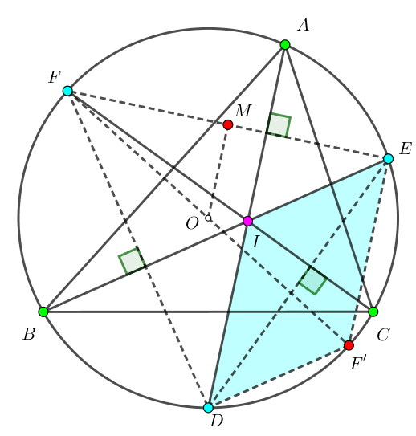

给定单位圆上 $N$ 个互不相同的点，第 $i$ 个点的坐标为 $\left( \cos \left( \dfrac {2 \pi T_i} L \right), \sin \left( \dfrac {2 \pi T_i} L \right) \right)$。
现在，在这 $N$ 个点中等概率随机三个点，求这三个点构成的三角形的内心的坐标期望。
第一行包含两个正整数 $N, L$ ($3 \leq N \leq 3000; N \leq L \leq 10^9$)。
接下来 $N$ 行，每行一个正整数 $T_i$ ($0 \leq T_i \leq L - 1; T_i < T_{i+1}$)，表示第 $i$ 个点的坐标为 $\left( \cos \left( \dfrac {2 \pi T_i} L \right), \sin \left( \dfrac {2 \pi T_i} L \right) \right)$。
输出一行，包含两个实数 $\bar x, \bar y$，表示内心的横坐标的期望和纵坐标的期望。答案被认为正确当且仅当相对或绝对误差不超过 $10^{-9}$。
考虑 $\triangle ABC$，它的外接圆为单位圆 $\odot O$。设 $D, E, F$ 分别为 $\overset \frown {A B}, \overset \frown {B C}, \overset \frown {C A}$ 的中点，$I$ 为 $\triangle ABC$ 内心，如下图所示：
由鸡爪定理知 $FI = FA, EI = EA$，从而 $EF$ 垂直平分 $AI \Rightarrow DI \perp EF$。
同理，$EI \perp FD, FI \perp DE$，因此，$I$ 是 $\triangle DEF$ 的垂心。
作 $EF$ 中点 $M$，延长 $FO$ 交 $\odot O$ 于 $F'$，于是 $OM$ 是 $\triangle DEF'$ 的中位线，且四边形 $IDF'E$ 为平行四边形。
从而 $\overrightarrow {OD} + \overrightarrow {OE} + \overrightarrow {OF} = \overrightarrow {OD} + 2 \overrightarrow {OM} = \overrightarrow {OD} + \overrightarrow {F'E} = \overrightarrow {OD} + \overrightarrow {DI} = \overrightarrow {OI}$。
我们以 $O$ 为原点，$\odot O$ 为单位圆建立复平面，设 $D, E, F$ 所对应的复数分别为 $d, e, f$，则 $I$ 点所对应的复数就应为 $d + e + f$。由复数的加法法则 "实部虚部分别相加" 可知，$x_I = x_D + x_E + x_F, y_I = y_D + y_E + y_F$ (不过这貌似没什么卵用)。
其实，用复数的一个主要原因是复数的乘法可以较好的表示旋转！
不妨设 $A, B, C$ 三点的辐角主值依次递增 (如上图所示，此处的辐角主值的定义使用 $\left[ 0, 2 \pi \right)$)，分别为 $\arg a, \arg b, \arg c$。则 $D, E, F$ 三点的辐角主值分别为 $\arg d = \dfrac {\arg b + \arg c} 2, \arg e = \dfrac {\arg c + \arg a} 2 \color {red} {\pm \pi}, \arg f = \dfrac {\arg a + \arg b} 2$ (注意中间的 $\pm \pi$)。
于是，由复数乘除法法则，可知，有 $d = \sqrt {b c}$ 等三式。
而复数开根是一个非常不好的运算，而且定义也容易产生歧义 (取上半平面还是下半平面说不清楚)，因此，我们令 $x = \exp \dfrac {\arg a} 2 \mathrm i = \cos \dfrac {\arg a} 2 + \mathrm i \sin \dfrac {\arg a} 2$，$y, z$ 以此类推。也就是说，我们对辐角 "取一半"。
这样一来，就有 $\arg d = \arg y + \arg z, \arg e = \arg z + \arg x \pm \pi, \arg f = \arg x + \arg y$。
又 $\left| d \right| = \left| e \right| = \left| f \right| = \left| x \right| = \left| y \right| = \left| z \right| = 1$，因此有 $\color {blue} {d = y z, e = - z x, f = x y}$。
从而，内心 $\color {red} {\iota = d + e + f = x y + y z - z x}$。
也就是说，对于一个三角形，它的内心所对应的复数可以很优美的表示成 $x y + y z - z x$ 的形式。
回到原题，考虑 $N$ 个点的情形。
由上经验，我们定义复数 $z_i = \cos \dfrac {\pi T_i} L + \mathrm i \sin \dfrac {\pi T_i} L$。
于是内心所对应的复数即为 $\iota = z_i z_j + z_j z_k - z_k z_i$ ($1 \leq i < j < k \leq N$)，我们所要求的即为 $\iota$ 的期望 $E \left( \iota \right)$ (它是一个复数，实部和虚部就是答案)。
显然，这样的三角形一共有 $\dbinom N3$ 个，因此我们把问题转化为了求和，即求 $$ \sum_{1 \leq i < j < k \leq N} \left( z_i z_j + z_j z_k - z_k z_i \right) $$
然后，和式变换。\begin{align*} & \sum_{1 \leq i < j < k \leq N} \left( z_i z_j + z_j z_k - z_k z_i \right) \\ =& \sum_{1 \leq i < j < k \leq N} z_i z_j + \sum_{1 \leq i < j < k \leq N} z_j z_k - \sum_{1 \leq i < j < k \leq N} z_i z_k \\ =& \sum_{1 \leq i < j \leq N} \left( N - j \right) z_i z_j + \sum_{1 \leq j < k \leq N} \left( j - 1 \right) z_j z_k - \sum_{1 \leq i < k \leq N} \left( k - i - 1 \right) z_i z_k \\ =& \sum_{1 \leq i < j \leq N} \left[ \left( N - j \right) + \left( i - 1 \right) - \left( j - i - 1 \right) \right] z_i z_j \\ =& \sum_{1 \leq i < j \leq N} \left( N - 2 j + 2 i \right) z_i z_j \end{align*}
到这一步为止，就能 $O \left( N^2 \right)$ 计算了，可以通过此题。不过实际上，这道题可以在 $O \left( N \right)$ 时间内完成：\begin{align*} & \sum_{1 \leq i < j \leq N} \left( N - 2 j + 2 i \right) z_i z_j \\ =& \sum_{j=1}^n z_j \sum_{i=1}^{j-1} \left( N - 2 j + 2 i \right) z_i \\ =& \sum_{j=1}^n z_j \left( \left( N - 2 j \right) \sum_{i=1}^{j-1} z_i + 2 \sum_{i=1}^{j-1} i \cdot z_i \right) \end{align*}
于是，只要一边计算，一边维护 $\displaystyle \sum_{i=1}^k z_i, \sum_{i=1}^k i \cdot z_i$ 即可 $O \left( N \right)$ 完成。
#include <bits/stdc++.h>
typedef std::complex <double> C;
int n, L;
int main() {
int i, arg; double unit; C c, s1(0, 0), s2(0, 0), ret;
scanf("%d%d", &n, &L), unit = M_PI / L;
for (i = 0; i < n; ++i)
scanf("%d", &arg), c = std::polar(1., unit * arg),
ret += (double(n - 2 * i) * s1 + 2. * s2) * c, s1 += c, s2 += (double)i * c;
ret /= n * (n - 1ll) * (n - 2ll) / 6;
printf("%.12lg %.12lg\n", ret.real(), ret.imag());
return 0;
}
坑1：定义复数时可以用 STL 的 std::polar 函数。
坑2：最后不要忘记把答案除以 $\dbinom N3$ 哦~